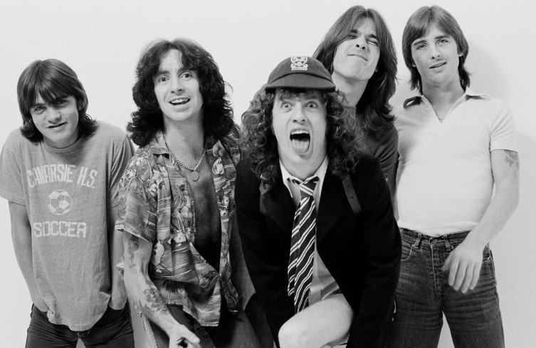
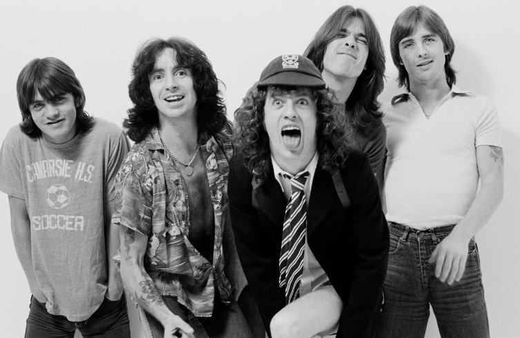
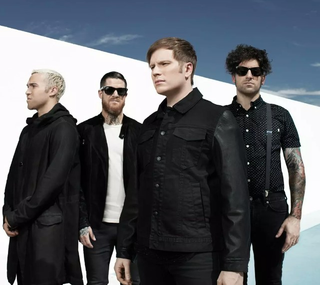
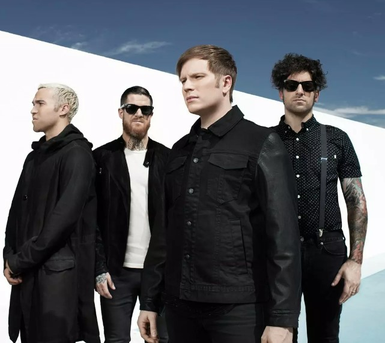
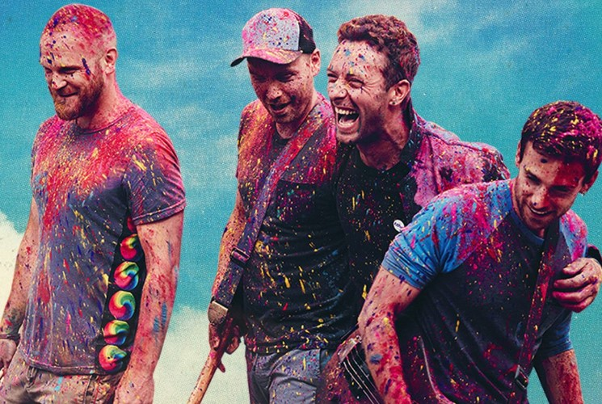
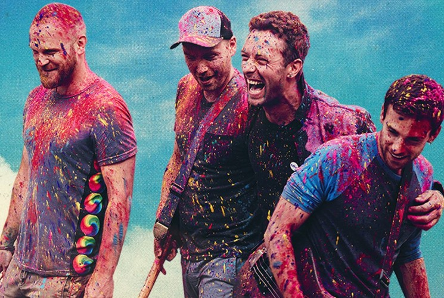

 



 

The Beatles’ George Harrison, Paul McCartney, John Lennon and original drummer Pete Best play a gig at the Cavern Club in Liverpool. Courtesy of Tracks Ltd.
In 1961, shortly before their rise to fame, the Beatles played a local gig at the Cavern Club in Liverpool. Now, rare photos of the group—including original drummer Pete Best—from that performance have been discovered. The band would release its first single, “Love Me Do,” a year later.
Paul Wane, managing director at Tracks, a music memorabilia company based in the United Kingdom that owns the photos, tells CNN’s Jack Guy that the photos were taken by a fan who followed the nascent pop band in the early 1960s, before they had officially released any music.
The photos were taken by a Liverpool-based fan. Courtesy of Tracks Ltd.
“Not many people had cameras back then,” says Wane. “That’s why there are so few shots of the Beatles in the Cavern. There’s very, very, very few.” All of the Beatles were born in Liverpool, and the city is where the band formed. Lennon and McCartney first performed there together in 1957.
The newly discovered photos feature John Lennon, 20, and Paul McCartney, 19, singing and playing guitar; George Harrison, 18, also plays guitar, while Best, 19, plays drums behind them. Drummer Ringo Starr wouldn’t join the band until 1962, a little over a year later, completing the “Fab Four.”
See Rare Photos of the Beatles Before They Were Famous | Smart News| Smithsonian Magazine
Comments
Leave a Reply